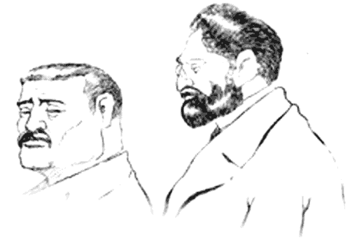
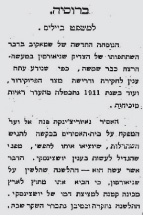
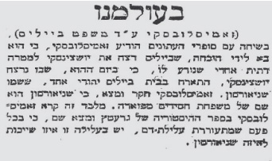

הרבי והבול ההפוך
למה צחק בייליס בעת משפטו ומה הצחיק גם את השופטים? אלו תעודות היסטוריות שלח כ”ק אדמו”ר הרש”ב לעורך הדין שניהל את הסנגוריה? כיצד עיתונאי שבא כקרוב משפחה, הביך את הכומר האנטישמי לעיני כל? מדוע הפסיק אדמו”ר הרש”ב מלימוד החסידות, ומדוע זמן קצר לאחר הזיכוי נסע למעיינות מרפא? וגם: איזו אפיזודה מגוחכת מתוך
למה צחק בייליס בעת משפטו ומה הצחיק גם את השופטים? אלו תעודות היסטוריות שלח כ”ק אדמו”ר הרש”ב לעורך הדין שניהל את הסנגוריה? כיצד עיתונאי שבא כקרוב משפחה, הביך את הכומר האנטישמי לעיני כל? מדוע הפסיק אדמו”ר הרש”ב מלימוד החסידות, ומדוע זמן קצר לאחר הזיכוי נסע למעיינות מרפא? וגם: איזו אפיזודה מגוחכת מתוך משפט בייליס סיפר הרבי מה”מ בכמה הזדמנויות? * פרק שני בכתבה המסקרת את משפט בייליס בהקשר החב”די שלו * בייליס וליובאוויטש חלק שני ואחרון

תמצית הפרק הקודם: שלטונות רוסיה העלילו על מנדל בייליס, כי רצח נער נוצרי על מנת להשתמש בדמו לאפיית מצות. עלילת דם כפי שהיה מקובל שנים רבות קודם לכן. כ”ק אדמו”ר הרש”ב ובנו אדמו”ר הריי”צ שכנעו את עורך דין אשר גרוזנברג, מטובי הפרקליטים הפליליים ברוסיה, יהודי במוצאו, שינהל את הסנגוריה.
ז’ תשרי תרע”ד. קייב.
יום המשפט נגד מנחם מנדל בייליס, הגיע. לא היה זה משפט אישי כנגדו, אלא נגד העם היהודי כולו ברחבי רוסיה. לא ייפלא אפוא שהמשפט עורר עניין והד רב. המונים צבאו על בית המשפט, שכן ביום זה מתחיל המשפט ההיסטורי שיקבע את גורל היהודים ברוסיה. כל דרכי הגישה לבית המשפט גדושות בקהל נרגש. הכרכרה השחורה של משמר בית הסוהר פילסה לה אך בקושי דרך בין ההמונים עד לכניסה לבניין, מתוכה יצא בייליס: ממושקף, בעל זקן שחור, חיוור ורועד קצת. שלושה חיילים החזיקו בו, ובידם השניה חרבות שלופות.
מטעם המנהיגים הרוחניים של יהדות רוסיה, הוכרז כי בכל מקום ברוסיה בו מתגוררים יהודים, יאמרו תהילים ברבים בבתי הכנסת ובבתי המדרש בכל יום מימי המשפט ובפרט ביום האחרון.
אולם בית המשפט היה מלא מפה לפה בקהל סקרנים. ביניהם התערבו סוכנים חשאיים רבים של המשטרה, וכן שלושים ושמונה העדים שהובאו להשבעתם עם פתיחת המשפט. על ספסל הסנגוריה כבר ישבו דרוכים ומתוחים חמישה עורכי-דין ובראשם מר אשר גרוזנברג, כולם ידועים בהשקפותיהם הליברליות, ושמם ידוע בכל רחבי רוסיה כפרקליטים מזהירים, בעיקר במשפטים פליליים.
השופטים? לא נכחו במקום. השלטונות החליטו כי את המשפט ינהלו “שופטים מושבעים” מקרב העם ונציגיו. דא עקא, מי שסידר את בחירת המשובעים היה התובע הראשי ברוסיה, מר ויפר, אשר למראית עין ביצע גורל בו נקבע מי ומי בחבר המושבעים. בפועל נבחרו שנים עשר חברים מושבעים, מתוכם שבעה איכרים, שלושה תושבים עירוניים ושני פקידים זוטרים. כיושב ראש בחרו הללו מתוכם – פקיד דואר. אף לא אחד מהם היה בעל השכלה כלשהי שיוכל להבין את העדויות הסבוכות.
המשפט נפתח בקריאת כתב האישום כאשר לאחר מכן הופיעו עדים רבים מטעם הקטיגור שהעידו עדויות שונות על הנאשם. קל היה לזהות שאין כל קשר בין עדותם לבין האשמה המוטחת על בייליס. הסנגורים לא התקשו להוכיח את השקר שבדברי העדים. מדליק הפנסים שאחובסקי, שהיה נחשב עד מרכזי ביותר נגד בייליס, הסתבך על נקלה בחקירת שתי-וערב, וגילה לבסוף שנפגש לפני המשפט עם אנשים מתוך המשטרה ואלה השקוהו לשכרה ושיננו עמו מה עליו לספר בבית הדין.
במשך רוב ימי הבירור המשפטי, כמעט ולא הוזכר שמו של בייליס. האיש המסכן ישב מאחורי סורג תא הנאשם והסתכל במבט קפוא על המתרחש סביבו כאילו לא בו נוגעת המהומה באולם בית המשפט. נגד בייליס לא היתה, כאמור, שום עדות מרשיעה, לא במישרין ולא בעקיפין. הקטגוריה ניסתה אפוא לנפח סיפורים של עדים שראו, למשל, ימים אחדים לפני הרצח, בקרבת מקום הרצח, “יהודי בעל זקן שחור” (ולפי הרמז, היתה הכוונה לבייליס) “מסתודד עם שני יהודים צעירים”; או שאותו “בעל הזקן מן המלבנה של זייצב” גירש פעם או פעמיים ילדים מן הסביבה ששיחקו בחצר המפעל (בייליס היה צריך להשגיח שם על בעלי העגלה שהיו באים לקחת לבנים, ובכלל לשמור על החצר מפני גנבים). בכתב-האישום היה גם סיפור של “ניסיון של בעל הזקן השחור לדחוף ילד לעבר התנור של המלבנה”, אבל בעת הבירור המשפטי כמעט שלא נגעו עוד ב”עובדה” זו.
עדי שקר רחוקים

מרכזו של המשפט לא סבב כלל סביב עדותם של עדים, אלא בחוות הדעת של מומחי הצדדים, של התביעה מכאן והסנגוריה מכאן. אלו הוזמנו להביע דעתם על הספקות לגבי הבדיקות הרפואיות שלאחר המוות, אך בעיקר לגבי השאלה של השימוש שיהודים עושים לצורכי פולחן בדמם של נוצרים, ובייחוד בדמם של ילדי נוצרים.
המגוחך היה, שבכל רחבי רוסיה ואוקראינה לא נמצא אף לא כומר אחד שהיה מוכן להעיד כי היהודים משתמשים בדם באפיית מצות. כדי להוכיח את הסיפור ההזוי, נאלצו להביא מטשקנט הרחוקה את הכומר הקתולי פראנייטיס, שקנה לו שם בחוגי האנטישמיות הרוסית בכתב פלסתר שהוציא כעשרים שנה לפני כן, בשם “הנוצרים בתלמוד היהודי”. בכתביו אלו חזר על רוב הזיופים והסילופים שצוררי היהודים היו משתמשים בהם עוד מימי-הביניים נגד דת היהודים. טענתו העיקרית של פראנייטיס היתה, כי לאחר שבטלו הקרבנות עם חורבן בית המקדש, נוהגים יהודים להרוג נוצרים כקורבן לאלוהיהם ולהשתמש בדם הנרצחים לאפיית מצות או ליין של ארבע כוסות לסדר פסח.
הסנגוריה בראשות גרוזנברג סיבכו שוב ושוב את הכומר שלא הבין יתר על המידה בענייני יהדות. מפעם לפעם הודה כי “שכח בפטרבורג רשימות שהכין בנקודה זו”. באחד הדיונים אף טען כי הוצאת התלמוד שעליה הוא מסתמך, אינה קיימת עוד, “משום שהיהודים השמידו את כל המהדורה”, אולם הוא ציין את המהדורה, היכן הודפסה ובאיזו שנה, והסנגור המהולל מר גרוזנברג לא התעצל, ולמחרת הביא לבית המשפט את כל הכרכים של המהדורה המדוברת והוכיח שלא היו דברים מעולם.
שניאורסון ובייליס

אולם מחקירות יסודיות התברר, כי הפייביל הזה לא מכיר את קירבתו לרבי ואינו מכיר כלל את עדת החסידים. אבל עובדה זו לא שינתה את המטרה של הקטגורים שניסו כל העת להכניס את “הצדיק שניאורסאהן” לעלילה. הם ביקשו להמשיך לנסות שוב ושוב לקשר את פייביל שניאורסון לליובאוויטש, חרף העובדה ששוב ושוב הוכח ההפך הגמור.
חלק מפרטי פרשיית שניאורסון התפרסמו בפומבי בעיתונות חודשים ספורים טרם פתיחת המשפט. הקטגור עורך דין שמאקוב, אנטישמי קיצוני, שם לו למטרה להרשיע את בייליס בכל מחיר והוא ביקש לערב את משפחת שניאורסון בזה. כבר בשלב מוקדם החל לדבר בפומבי על “השתתפותו של הצדיק שניאורסאהן במעשה הרצח”. בעיתונים שהתפרסמו ביום כ”ו סיון תרע”ג נודע, כי האסיר נאווריצ’ינסקה ביקש מהוועד המפקח על בית הסוהר, בקשה להשתדלות לשחרור מפני שהגדיל לעשות בענין יושצינסקי. מה היה מעשהו הגדול שאמור היה לשחררו? התברר כי הלה הלשין על הצדיק שניאורסאהן דברי הבל הזויים, כי הביא איתו מחוץ לארץ מכונה קטנה למציצת דמו של יושצינסקי. ההלשנה נחקרה וכמובן התבררה עד מהרה כשקרית.
קטגור אחר, זמיסלובסקי שמו, עשה אף הוא רבות כדי להוכיח את הקשר של הצדיק שניאורסאהן לעלילה השפלה. בעיתון ‘הצפירה’ מיום י”ד באלול תרע”ג פורסם, כי בשיחה עם סופרי העיתונים הודיע זמיסלובסקי, כי בא לידי מסקנה שבייליס רצח את יושצינסקי למטרה דתית אחרי שנודע לו שביום הרצח התארח בבית בייליס יהודי אחד ששמו שניאורסון. זמסילובסקי התפאר בפני העיתונאים כי חקר ומצא ששניאורסון הוא שם של משפחת חסידים מפוארת. זמיסלובסקי לא הסתפק בכך, והוא הוסיף והמשיך בדברי הבל הזויים עד שקשה להבין כיצד ניתן לשקר בדבר שכולם יודעים שהוא הזוי. וכך נכתב ב’הצפירה’: “מלבד זה קרא זאמיסלובסקי בספר ההיסטוריה של גרעטץ ומצא שם, כי בכל פעם שמתעוררת עלילת דם, יש בעלילה זו איזו שייכות לאיזה שניאורסון”. כמו כן הוסיף זאמיסלובסקי והסביר כי פרופסור טרואיצקי מצוות ההגנה אינו מאמין בהשתמשות בדם במצות, כי הוא מבין רק בתלמוד ולא בקבלה, אבל זמיסלבוסקי עצמו נודע לו מהזוהר והקבלה כי אכן יהודים משתמשים בדם.
דא”ח בבית ספר
הטענות כי החסידים הם המשתמשים בדם, הביאו את הקטגוריה לחקור היטב את החסידים ודרכי הנהגתם, כדי להוכיח שהם קיצונים ומוזרים, והנה מתוך מכתב שהגיע אל אדמו”ר הרש”ב באותם ימים טרופים עולה כי היה אף ניסיון לטעון כי ילדי החסידים לומדים חסידות וכך אולי להבהיר שהנה כבר מגיל צעיר מחדירים את תורת הנסתר ומעובדה זו להסיק כי החסידים הם אדוקים וקיצונים. בפועל בתקופה זו, רק בחורים שלמדו בתומכי תמימים למדו חסידות ואילו ילדים בדרך כלל לא נהגו ללמוד חסידות בצורה סדירה.
המכתב המיוחד (שנחשף על ידי ידידי הרב יעקב שלום חזן בבית משיח גיליון 256) הגיע מהביבליוגרף ר’ שמואל ווינר שניהל באותם ימים את הספריה במוזיאון האסיאתי בפטרבורג, ולימים הספריה הפרטית שלו נרכשה על ידי אדמו”ר הריי”צ וזו הספריה שעמדה במוקד משפט הספרים.
והנה קטעים קצרים מהמכתב המיוחד:
“ב”ה יום ד’ טו”ב כסלו, שנת נפשי תער”ג לפ”ק פטרבורג
שלום דובר לעמו, וה’ אלקיו עמו, דגול מרבבה, הקימו לנגיד על עמו, ולהיות נוטר כרמו, בישראל גדול שמו, ה”ה יחיד הדור והדרו גזע ישישים בנן של קדושים, רבינו הרב רבי שלום דובער נ”י האדמו”ר שליט”א, הנוטה אלי כנהר שלום
[…]
עתה באתי להרגיע את רוח קדשו בנוגע למה ששמעתי גוי מסיח לפי תומו, שלומדים דא”ח בבית ספר, והשבתי לו לא היו דברים מעולם, וכל הרוצה ללמוד לומד בפני עצמו, ויקבל עדותי מבלי להטיל ספק בזה”.
ר’ שמואל מספר כי הגוי בן שיחו, טרם מצא ידיו ורגליו בעלילת שוא כי הוא מחפש בספרים הקדושים ואינו מבין בכך מאומה: “לכן קצף עלי באמרי לו כי לשוא יחפשו עקבות עלילת דם בספרים הקדושים, וזה כ”ה שנה מאז נמצאים כארבעים אלף ספרי ישראל, תחת השגחתי פה במוזיאום האזיאטי, מלבד מה שראוי עיני, מעודי עד היום, בהיותי בעל מלאכה אחת, וחוקר ודורש אחרי כל הדפוסים השונים, והנני מעיד לא רק כאיש יהודי, אך גם כיודע ספר, כי בכל הספרים וכל הכתבי יד הידועים לי, לא נמצא גם רמז קל שהיהודים משתמשים בדם אדם, ובאם ימצאו באיזה ספר, אז אחראי אנכי בעד עדותי הזאת.
“ויהי בשמעו מפורש מפי כדברים האלה. לא יכול להתאפק ויאמר היהודים עם קשי עורף המה, ואינם מודים על האמת […] עניתיו כבר כתוב בתורת משה כי עם קשה עורף אנחנו, ולולא קשי ערפנו כבר נכחדנו […] בשמעו תשובתי, פנה אלי עורף ויצא בחרי אף, מבלי דרישת שלום […]”.
ר’ שמואל מספר כי מיהר להודיע משיחה זו לבן רבי יוסף יצחק, ואדמו”ר הריי”צ שלח מכתב בנידון אל ר’ שמואל גורארי’ שגר בפטרבורג, והוא הפציר בו שיכתוב את פרטי הדברים אל אדמו”ר הרש”ב ור’ שמואל וינר ניאות לכתוב למרות שלא רצה להטריח את אדמו”ר הרש”ב, אבל הוא מספר כי ביטל רצונו בפני הבקשה בשם אדמו”ר הריי”צ ובפרט שבו ביום נפגש עם אותו גוי חוקר והפעם הוא נהפך לאיש אחר לגמרי, כי חקר ודרש מי הוא ר’ שמואל וינר. והפעם ביקש הימנו אם ישנו ספר “שלשלת הקבלה” [נראה שפגישותיהם היו בספריה אותה ניהל ר’ שמואל וינר] והוא מצא עבורו את הנדרש וגם הראה לו עוד פסק בנוגע לעלילת דם. למרות ההערכה שישוב לחפש ספרים, הרי שביומיים הבאים לא הגיע, ואז נכתבה אגרת זו בא נפרשת חקירה של גוי אנונימי, שלא ברור מי שלחו.
חיפוש בליובאוויטש
השלטונות, למרבה התדהמה, עשו עצמם כמאמינים לטענות הקשות נגד החסידים בכלל והצדיק שניאורסון בפרט ולא בחלו באמצעים מוזרים כדי לערער את השלווה בבית הרבי. הם ערכו חיפוש דקדקני בבית כ”ק אדמו”ר הרש”ב בליובאוויטש כדי למצוא קשר בין פייבל שניאורסון לצדיק שניאורסאהן.
בעיתון ‘המודיע’ שיצא בפולטבה בשנת תרע”ג סופר על החיפוש: “בגלל עניין בייליס נעשה חיפוש בליובאוויטש בביתו של האדמו”ר שליט”א. החיפוש היה במעמדו של אחד מסגני הפרוקירור המוהיליבי [ראש התביעה בפלך מוהילוב, איזור בה שכנה ליובאוויטש] של פקיד ז’נדרמי, ושל שר המחוז. לוקחו משם ספרים ומכתבים ונמסרו להרב של עדת ארשא לתרגם”.
עיקר מטרת החיפוש טמונה בשורה התחתונה של הידיעה: “חוקרים ודורשים בספרי המטריקאות, מי ומי הם בני משפחת שניאורסון”. “מטריקאות” הם תעודות הלידה ברוסיה, המסמך החשוב ביותר המעיד על מוצאו והוריו של כל אזרח. מתעודות אלו ניסו לדלות מידע כיצד פייבל שניאורסון קשור לרבי שניאורסאהן.
ברור שתלמידי הישיבה בליובאוויטש, קרובים לחצר, ידעו מהחיפוש שנערך בבית הרבי. הנה תיאור החיפוש מזווית מבטו של הרב רפאל כהן, מהבחורים בישיבה, בספרו ‘שמועות וסיפורים’:
“ויבוא זנדרמובסקי פולקובניק [פקיד צבאי בדרגת אלוף משנה] עם אחדים מעוזריו לליובאוויטש לשם חקירה, משום ליובאוויטש היא בירת החסידים. וישהו שם ימים אחדים וכל שיחם ושיגם היה עם אדמו”ר הריי”צ. לאחר זמן קצר היה אבי בליובאוויטש, ויספר לו הריי”צ פרטים משיחתו עמהם. בין השאר אמר לו כך: “לנער הלומד ב’שיעור’ [בישיבה] יש שכל רב יותר מאשר להם. ועוד סיפר לאבי שפולקובניק שאל אותו בענין הנשיאות של הרביים. אם זה עובר בירושה, או שזה עובר אל מי שראוי לזה. והשיב לו – ששתיהן אמת”.
למה צחק בייליס?
במהלך כל ימי המשפט ישב בייליס בתא הנאשמים כשסביבו שוטרים חמושים. בארשת פנים קפואה האזין לטענות המגוכחות על אמונות ומנהגים יהודים שלא היו ולא נבראו. הוא גם צפה בחקירת עדים מבולבלים. בעבורו, לא היה זה תענוג, שכן כל מילה שלהם יכולה הייתה לחרוץ את דינו לשבט או לחסד. רק פעם אחת חרג ממנהגו וצחוק נראה על פניו.
כאמור, נעשו ניסיונות חוזרים ונשנים לקשר את החשוד פייביל שניאורסון לרבי הרש”ב מליובאוויטש. בשלב מסוים עלה אחד העדים על דוכן העדים – ועדותו היא שגרמה לבייליס לצחוק. אפילו השופטים גיחכו. הנה הקטע הרלוונטי כפי שנדפס בעיתון ‘הצפירה’ גיליון ערב חג הסוכות תרע”ד:
“ועוד הפעם אדון גולובוב. החקירה החלה… על דבר הענין בעצמו איננו יודע מאומה. אבל בעת אשר נודע בעיר, כי נרצח יושצינסקי, אז התגנב איזה חשד בלבו וכאשר נודעו לו הפרטים החליט בכל תוקף, כי זה הוא רצח למטרה דתית…
[והעד מוסיף לדבר על בייליס ועל חשודים נוספים:] עוד אחדים אמרו לי כי מאוד אפשר, כי גם מארגולין בעצמו השתתף בענין הזה.
איזה מרגולין? שואל הנשיא [נשיא בית המשפט]
אינני יודע – נשמעה התשובה.
ואת פייוויל שניאורסון הכרת? – משמיע שמאקוב את שאלתו הרגילה, שלא יפסח עליה אף פעם אחת.
פייוויל שניאורסון? – כן.
אבל לא פאוועל שמו, כי אם פייוויל – מבאר שמאקוב בעונג.
ועל דבר “צדיק” שמעת? מוסיף שמאקוב לשאול.
כן, אמרו לי, כי בייליס הוא צדיק [ההדגשה במקור].
בפעם הראשונה בכל ימי ענותו פרץ בייליס בצחוק, והצחוק הזה מעל ספסל העינויים קרע את הלב כמו באיזמל חד… צחוק קל נראה גם על שפתי השופטים.
הטענות הקשות נגד החסידים, אילצו את עורך דין גרוזנברג כמו גם את הרב מזא”ה, לעסוק במנהיגי תנועת החסידות בכלל ואדמו”רי חב”ד בפרט. משום מה, דווקא שמו של אדמו”ר ה”צמח צדק” נשמע רבות בבית המשפט. דבריו של גרוזנברג על אודות ה”צמח צדק”, הגיעו גם אל אדמו”ר הרש”ב אשר ביקש לסייע לו להבהיר כי אדמו”ר ה”צמח צדק” נחשב לגדול ומיוחד גם בעיני הצאר הרוסי. בשל כך שלח אליו על ידי שליח מיוחד את התעודות הייחודיות שקיבל אדמו”ר ה”צמח צדק” משלטון הצאר: תעודת ‘אזרח נכבד’ ותעודת ‘אזרח נכבד לדורותיו’.
וכך כותב אדמו”ר הרש”ב אל עורך הדין באגרת מד’ מר-חשון תרע”ד, כשבוע לפני תום המשפט:
“כבוד העורך דין הנכבד ונעלה ומרומם מעוז ומשגב מוסר נפשו על עמו ודתו ה’ גרוזענבערג נרו יאיר ויזרח
אחדשה”ט
“בקראי בעיתונים את ההרצאה שהרציאו בבית המשפט אודות אבי זקני מו”ר הרבי המפורסם מוהר”ר מנחם מענדל שניאורסאהן זצקללה”ה, מצאתי לנחוץ לשלוח לכבוד מעלתו את הפאטאמסטווע גראזדאנסווע [= תעודת אזרח נכבד לדורותיו] הניתן לאבי זקני מאת הקיסר ניקאלאי הראשון, ואני מצרף לזה גם הפאטשאטנע גראזדאנסטווא [= תעודת אזרח נכבד] הניתן לו איזה שנים מקודם, בחשבי אשר כבוד מעלתו ימצא בזה תועלת להוכיח את צדקתו ולהראות ישרת הנהגתו וכבודו ומעלתו בעיני הקיסר המנוח”.
באגרת זו הרבי הרש”ב משתתף ברגשותיו של עורך הדין שעיני יהדות העולם כולה נשואות אליו:
“בעומק לבבי הנני מרגיש את עוצם מרירות נפש כבוד מעלתו בעת ההוה, אשר שונאינו ומקטריגנו ממטירים עלינו מטרת אש וגפרית, מאשימים את דתינו ותורתינו התמימה הברורה והזכה אשר האירה את העולם ומלואה, מעלילים עלינו עלילות שוא ושקר אשר אין האוזן יכולה לשמוע, עושים אותנו לאוכלי אדם רחמנא ליצלן.
“אמנם ידיד הלאום, לא בפעם הראשונה נשמת ישראל עומדת לפני כסא השופטים, ובכל עת אלקי השמים והארץ אשר בידו נפש כל חי, העמיד לנו מליצי יושר אשר מלאכי אלקים לוו אותם על דרכם הישרה, והאמת נצחה את השקר”.
הרבי מברכו כי יצליח לגלות את האמת כדי שיצא לאור הצדק:
“ועתה כבודו האיש הדגול מרבבה, ואתו חבריו מליצי היושר, יהי אלקים עמכם להצליח דרככם ופעולותכם, הוא יהי’ עם פיכם, הוא יורה אתכם בדבריכם ויתן לכם לשון לימודים להראות ולגלות את האמת מחשך השקר, את האורה מתוך חשיכה ולגול את אבן האשמה הנבזה והשקרית מעל אחינו, ולעין כל יראו את ישרותם וצדקתם, וכל דבריכם יפעלו פעולה טובה על השופטים ויצא לאור צדקנו.
“בלב מלא תקוה לד’ אלקי אבותינו אשר יהי בעזרתינו ויראה את צדקתינו לעיני השרים והעמים, הנני חותם בכל חותמי ברכות, יהי נועם ד’ עליו ומעשי ידיו יצליח, כעתירת ידידו המכבדו ומוקירו כערכו הנעלה ודורש שלומו (כפ”ח 830)”.
כפי הנראה מדברי הימים ההם התעודות לא הוצגו בבית המשפט, ויתכן שבעת שהגיעו כבר היה לקראת סוף המשפט ולא היה שייך להציגם.
והיכן התעודות הללו כיום? לא ברור אם הוחזרו ואחר כך נאבדו, או שמא לא הוחזרו.
מתי חיה בבא בתרא
העיתונאי וההיסטוריון בן ציון כץ ביקש לסייע בהתנדבות ובחשאי לסייע להצלחת המשפט, ולכן שהה בבית המשפט על תקן של “קרוב משפחת בייליס” אך לאמיתו של דבר דאג לתת עצות טובות לעורכי הדין והמומחים מצוות ההגנה. אחד התרגילים החשובים שעשה, התפרסם מאוד והוא מוכר בזכות שמו: בבא בתרא.
היה זה כאשר הכומר עלה לתת עדות. הכומר החזיק מעצמו כמלומד אך חוות דעתו נלקחה מספר מתורגם מגרמנית אותו תרגם בעבר הקטגור עורך דין שמאקוב. בן ציון כץ קלט באיזה חומר מדובר, בעוד שלכומר עצמו אין מושג מה הוא מקריא. הוא כתב אפוא לעצמו כמה שאלות מכשילות, ובהן שאלות בנוגע לשמות מסכתות וספרים אחרים שצוטטו על ידי הכומר. את השאלות מסר לעורכי הדין ואלה חילקו ביניהם את השאלות כדי להציג אותן בהמשך.
בתחילה שאלוהו מה פירוש ‘חולין’, ‘יבמות’, ‘עירובין’ וכו’, אך הכומר השיב ‘איני יודע’. ואז נשאלה שאלה מעניינת: מתי חיה בבא בתרא ומה היתה פעולתה? ההטעיה הייתה מכוונת, שכן ‘בבא’ ברוסית זה כינוי מקוצר לסבתא (בבושקה), והכומר השיב: “איני יודע”. רבים מהנוכחים באולם המשפט שידעו במה מדובר, החלו לצחוק. בן ציון כץ אשר הגה את התרגיל, פרץ בצחוק מתגלגל ולא הצליח להפסיקו עד שהוצא בכוח מן האולם. “ראיתי בכך ניצחון גדול, ורבים בירכו אותי אחרי כן שהכרעתי את פראנייטיס [הכומר]”, כתב לאחר מכן בספרו “על עיתונים ואנשים”.
“כעין רטט עבר בין הקהל למשמע הדברים הנלהבים”
ימים ספורים קודם פסק הדין, הגיע תור הנאומים המרכזיים, הנאומים שעסקו בעיקר במהות. הרב מזא”ה נאם באריכות והסביר בעיקר על חסידים וחסידות כפי שייעצו לו הרב לוי יצחק שניאורסאהן והרב מנחם מענדל חן. בדבריו הדף את הטענות כי דווקא החסידים נוהגים להשתמש בדם במצות. נאומו הותיר רושם עז על חבר המושבעים ושאר הנוכחים באולם.
יותר מכל הותיר רושם נאומו של גרוזנברג. עורך הדין הנודע לא דיבר במתינות ובסגנון משפטי מאפיין, אלא ברגש רב ובהתלהבות. את נאומו סיים כפי הוראת אדמו”ר הרש”ב אליו בפסוק היהודי הנצחי: “שמע ישראל ה’ אלוקינו ה’ אחד”.
והנה הדיווח האוטנטי מעיתון ‘הצפירה’:
“סוף נאומו של גרוזנברג היה מצוין, זה היה משא של יהודי הנושא בגאון את דגל עמו. בהתלהבות מצוינה ובהגיון המשפיע על כל השומעים, סתר מתחילה את כל היסודות הרעועים של האשמה נגד בייליס. הוא הוכיח כי כל הבנין הוקם על בלימה וכי ההוכחות של הפרוקורור (תובע) אינן עומדות בפני הבקורת [המשפטית].
“ואולם ביחוד היה גרוזנברג יפה ומקסים, כשעבר ללמד סניגוריה על תורת ישראל, שחללוה המומחים ממינו של [הכומר שהובא מטשקנט] פראנייטיס.
“נתבע לדין – אומר גרוזנברג בעוז וחום – לא בייליס, אלא הביבליה [התנ”ך] הקדושה לנו ולכל העמים, אפילו אלקי היהודים נמסר לדין. פה, בבית הדין קבל אלקי ישראל, צורה של יהודי טיפוסי שערכו עליו צייד. גם על הביבליה ערכו ציד. יושצניסקי אינו דורש כופר של נפש נקיה – גומר גרוזנברג – בייליס איננו אשם. זהו ברור. הוא צריך לצאת זכאי בדינו. אך גם אם ידינוהו לכף חובה – לא יהיה זה מאורע חדש בתולדות היהודים. אבותיו של בייליס עלו על מוקדי אש האינקוויזיציה בעד אמונתם ומתו בתפילה על שפתותיהם ובהודיה לא-לקים וגם בייליס נכדם ילך לעבודת פרך ובפיו אותה הקריאה ההיסטורית היהודית: “שמע ישראל ה’ א-להינו ה’ אחד!”
“כעין רטט עבר בין הקהל למשמע הדברים הנלהבים הללו, הרושם היה חזק למאד”.
פסק הדין המיוחל
י’ במר-חשוון תרע”ד.
המשפט מגיע לקיצו. האולם גדוש היה בקהל רב. אזור ישיבת העיתונאים היה תפוס עד אפס מקום. ליד בית המשפט והרחובות הסמוכים צבאו המונים ובפתח בית המשפט שוטרים וחיילים רבים.
השופטים המושבעים דנו על פסק הדין בדלתיים סגורות, ולאחר דיון בן שעה וחצי יצאו אל אולם בית המשפט. ניתן היה למשש את המתח האדיר ששרר באוויר. יושב ראש חבר המושבעים הקריא את פסק הדין:
“על השאלה הראשונה: אם הוכח כי במלבן של זייצוב נהרג יושצינסקי וכו’, ענו השופטים המושבעים: כן: הוכח!
“על השאלה השניה: אם אשם הוא בייליס בזה, שרצח למטרה דתית את יושצינסקי? ענו השופטים המושבעים: לא! איננו אשם!”
עיני כולם הופנו אל גיבור המשפט – מנדל בייליס. הוא בשמעו את הזיכוי, כוחותיו לא עמדו לו, והוא נפל מתעלף ורק לאחר מאמצים רבים הצליחו להעירו.
כתב עיתון ‘הצפירה’ דיווח למערכת העיתון בוורשה כי בקושי רב הצליח לשלוח טלגרמות עם הדיווחים מבית המשפט, לאחר שנוצרו תורים ארוכים למשלוחי טלגרמות. רק בגלל תפקידו העיתונאי התאמץ והצליח לשלוח מברק עם עדכונים. ולא רק הוא, גם עורך דין גרוזנברג שלח טלגרמה ובמילים קצרות דיווח לאדמו”ר הרש”ב כי בייליס יצא זכאי.
ובליובאוויטש – בשעה 12.30 בלילה, מאות תלמידי ישיבת ‘תומכי תמימים’ כמו גם אנ”ש והתושבים ישבו בבתי הכנסת ואמרו תהילים בתפילה לזיכויו של בייליס, ואילו אדמו”ר הרש”ב שקוע בלימוד חסידות.
בשלב מסוים הגיע המברק אל הרבי וזה לשונו:
רבי שניאורסאהן ליובאוויטש
רבי מזל טוב לך ולכל ישראל אחינו, הבית דין מצא כי מענדיל בייליס זכאי, מענדיל בייליס חפשי הוא.
הנני שלך א.א. גרוזענבערג
כאשר הוכנס המברק אל הקודש פנימה, הפסיק אדמו”ר הרש”ב מלימודו כדי לשמוע את הבשורה המרנינה. מנהג הרבי הרש”ב היה שלא להפסיק ללימוד חסידות. רק פעמיים בחייו הפסיק, ואחת מהן היתה כאשר התקבל המברק המיוחד על זיכויו של בייליס.
עיתוני כל העולם בישרו למחרת את הבשורה שכולם ייחלו לה: בייליס זכאי! בייליס חופשי! רק מעטים ידעו אז (וגם עתה) על חלקם הרב של אדמו”רי ליובאוויטש בביטול גזירה קשה ונוראה זו שיכלה חס ושלום להמיט אסון איום ונורא על יהודי רוסיה הגדולה שכללה באותן שנים גם את יהדות פולין וליטא שבהן חיו מיליוני יהודים. אדמו”ר הרש”ב התבטא על עלילה זו כי מעשה בייליס בלבל את העולם (אג”ק הרש”ב ח”ב אגרת תלג).
גרוזנברג עבד במהלך המשפט חינם אין כסף. אולם בשלב מסוים הועבר מסר אל אדמו”ר הרש”ב כי גרוזנברג בכל זאת מחכה לאות הוקרה, והרבי שלח אליו ש”ס ממהדורה נדירה, כאשר הרבי עצמו מציין כי כנראה נותרו ממנו שנים עשר עותקים בלבד!
עלילת בייליס ותוצאותיה, גרמו לאדמו”ר הרש”ב לחולשת הלב, והרב יהודה חיטריק בזיכרונותיו מספר כי בגין כך זמן קצר אחרי הפסק דין (בסביבות כ’ חשון) נסע למעיינות מרפא.
הרבי איש פלא
על יחסו של גרוזנברג לרבי במהלך המשפט, סיפר הרה”ח הרב ישראל נח הגדול (בליניצקי):
“בימי מלחמת העולם הראשונה, עבר דרך קרעמנצ’וג עורך הדין המפורסם אוסקר (אשר) גרוזנברג, שהיה בין עורכי הדין המפורסמים ברוסיה וקיבל על עצמו להיות הסנגור הראשי במשפט בייליס, שהיה בעיר קייב מספר שנים לפני כן. בהגיעו לקרמנצ’וג, סיפר לחסידים את כל הפרשיה, ואת התערבותם של רבנים ובהם אדמו”ר הרש”ב, לטובת בייליס.
“בימים בהם שהה בעיר, היה קשה למצוא בחנות טבק לעשן, והוא נכנס אל בית החרושת לטבק של משפחת גוראריה. נהיר היה לו כי לא יוכל לבקש מהעובדים למכור לו סיגריות שכן שם לא מכרו כלל, אפילו בכמויות. לכן מסר לאחד העובדים את שמו וכן מסר כי הוא מעוניין לפגוש את מר צבי גוראריה ממנהלי המפעל.
“ר’ צבי אכן יצא מיד לקבל את פני האורח החשוב ברוב כבוד, כראוי לאדם כמוהו. במהלך פגישתם סיפר עורך הדין על אודות אישיותו של הרבי הרש”ב שסייע רבות בזיכויו של בייליס:
”’אני מכיר היטב את הרבי וכי הוא איש פלא שלא ראיתי כמותו. יש לו ידיעה בכל החכמות אפילו בחכמת המוזיקה, ואנו עורכי הדין נחשבים לעומתו לכלום”. ר’ ישראל נח שהיה מנהל חשבונות של המפעל, נכח בעת הפגישה ושמע את הדברים מכלי ראשון ולאחר מכן אף העלה אותם על הכתב.
מה יכול הייתי לעשות
לאחר מספר שנים שוב נחלץ גרוזנברג לסייע על פי בקשת אדמו”ר הרש”ב. על כך סיפר המשפיע ר’ מענדל פוטרפס:
“בזמן המהפכה הקומוניסטית היו תופסים כל אדם שיש ברשותו כסף ורכוש [בסכומים גדולים] ומענישים אותו קשות. באותה שעה כינס הרבי הרש”ב אסיפה של עורכי דין יהודים כדי לטכס עצה, איך להציל כמה שיותר יהודים. בהמשך הפנה שאלה אל כל אחד ואחד מעורכי הדין: “כמה יהודים הצלת היום?”
“כאשר שאל את עורך הדין גרוזנברג, השיב הלה בסיפוק כי בו ביום הציל עשרה יהודים ממוות. אמר לו הרבי הרש”ב: “לא צריך לחשוב רק מה עשיתי, אלא מה יכול הייתי לעשות, ומה אכן עשיתי בהתאם לכך”.
בימי המלחמה העולמית הראשונה, ביקר אדמו”ר הרש”ב בפטרבורג כדי לפטור מהצבא רבנים ושוחטים. גם בנושא זה פעלו לסייע בידו הגביר ר’ שמואל מיכל טריינין, עוה”ד גרוזנברג ועוה”ד סליוזברג.
רב הנסתר על הגלוי
כיצד פרשה כזו חשובה ומסועפת זו שהרעישה בזמנו את העולם היהודי, כמעט ולא זכתה עד היום לסיקור בספרות החב”דית? אולי משום שהכול התנהל דרך לשכה חשאית שהוקמה על ידי אדמו”ר הרש”ב וטיפלה בנושאים מעין אלו, כמו גזירות הצאר נגד היהודים, פוגרומים ועוד. לא רק שהלשכה היתה חשאית, אלא אף חלק מהמכתבים נכתבו ברמזים וכמעט ולא נמצא חומר על פרשיה ייחודית וחשובה זו.
אפילוג
שלוש שנים חלפו מאז זיכויו של בייליס, ושלטון המונרכיה של הצאר הופל לנצח, במקומו הוקמה ממשלת קרנסקי ששלטה ברוסיה פחות משנה. בתקופה קצרה זו הספיקה הממשלה להקים ועדת חקירה מיוחדת בנוגע למשפט בייליס. על יסוד חומר זה הוכח, כי זמן קצר לאחר רצח הנער יושצ’ינסקי, כבר ידעו השלטונות כי מי שרצח אותו היו חבורת פושעים שידעו כי הנער יודע על מעלליהם יתר על המידה.
עורך הדין מר אשר גרוזנברג נפטר בת”ש בניצה בצרפת. מספר שנים אחר כך נערכה אזכרה גדולה לכבודו, כאשר כ”ק אדמו”ר הריי”צ כתב אגרת מיוחדת למארגנים, ובה הכתירו בתוארים מופלאים:
“הפרקליט הגאוני מר א.א. [אשר אוסקר] גרוזענבערג”, והוסיף: “שמעתי אשר חובבי שמו והזוכרים פעולותיו הכבירות של האדם הדגול מרבבה בענקי גאוני חכמי הפרקליטים מר אשר ב”ר יוסף זכרונו לברכה גרוזנבערג לטובת כלל ישראל מתכוננים לעשות לו הזכרה טובה, ורבותינו זכרונם לברכה אמרו כי צריכים לכבד את עושי מצוה, ומה גם אלו שמקיימים מצוה במסירות נפש בעד הכלל, כל ישראל מחוייבים להדר בכבודם ולהזכירם לברכה, והזכרה כזו זכות היא וקורת רוח לנשמת הנפטר…
“הנני להשתתף בין מחבבי שמו וזכרו הטוב של מר א.א. גרוזענבערג… טוהר לבבו של היהודי הרציני המאמין הגדול המנוח אשר ב”ר יוסף עליו השלום
“תהי נשמתו של מר אשר ב”ר יוסף צרורה בצרור החיים את ד’ עם נשמת התמימים והישרים אשר מסרו נפשם בעד כלל ישראל, וזכרו הטוב באמונתו בד’ ובחיבת התורה ושומרי מצוה יהי למופת לכל בני גילו היהודים משפחת הפרקליטים החיים איתנו היום” (אגרות קודש אדמו”ר הריי”צ חי”ג אגרת ד’תתס).
ואילו מנדל בייליס, לאחר תום משפטו עלה לארץ הקודש, ולאחר מספר שנים היגר משם לארצות הברית. כאשר ביקר אדמו”ר הריי”צ בארה”ב בשנת תר”צ, הגיע אליו מענדל בייליס, כפי שכתב אדמו”ר הריי”צ ביומנו: “יום ה’ ג’ כסלו: בערב היה אצלי מ. בייליס”. יתכן ובא להודות על כל מה שרבותינו נשיאינו עשו למען זיכויו.
מקורות לשני הפרקים: אגרות כ”ק אדמו”ר הרש”ב, אגרות כ”ק אדמו”ר הריי”צ, שיחות קודש, תולדות אדמו”ר הרש”ב, תולדות לוי יצחק, תולדות חב”ד בפטרבורג, תולדות חב”ד ברוסיה הצארית, ר’ מענדל, רשימות דברים (חיטריק), היהדות והדם (בתוך במלכות היהדות), לקוטי ספורים (פרלוב), ענין בייליס, על עיתונים ואנשים, הצפירה, אבני חן, מאמענט, היינט, הזמן, המודיע-פולטבה, הזמן, מוריה, בית משיח, כפר חב”ד, מחניים ועוד.
הרבי והבול ההפוך
במספר התוועדויות סיפר הרבי סיפור קצר מתוך משפט בייליס, סיפור הממחיש את האבסורד שבטענות מופרכות, העיקר להוכיח את טענת התביעה:
בזמן התרחשות משפט בייליס המפורסם, היה יהודי שגר בעיירה קטנה, למדן גדול שהוכיח באמצעות איסוף כל המקומות בש”ס ובפוסקים, את איסור אכילת דם. הוא נתן את החומר למלומד שתירגם את הדברים לרוסית ושלח את החומר בדואר אל התובע הראשי.
כשהגיע המכתב לייעודו שאל המזכיר את התובע הראשי: מה דעתך על החומר?
השיב הלה: הייתכן?! הלא תראה, היהודי הזה הדביק את הבול – עליו התנוססה ציור פניו של הקיסר ניקולאי – בצורה הפוכה, כשהראש פונה כלפי מטה! אם כן, זוהי מרידה במלכות!…